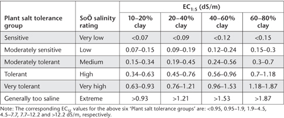

The soil solution plays a major role in the supply of nutrients to plants. It also contributes to the cycling, transformation and transport of nutrients and pollutants in soils and ecosystems (Agbenin 2003). Its key components are soil water and dissolved electrolytes, gases, and water-soluble compounds (Adams 1974). While it is possible to measure all constituents, this is usually impractical. Moreover, the composition of the soil solution is affected by plant nutrient uptake, root exudates, microbiological activity, fertilisation, leaching and other soil properties that vary in space and time.
An indication of the nature and ionic strength of the soil solution can be obtained from the EC of a soil/water suspension. This soil test provides a quick estimate of the concentration of electrically-charged water soluble salts able to enter and persist in the soil solution. These consist predominantly of the cations Ca2+, Mg2+ and Na+ and the anions Cl–, SO42– and HCO3–. Fertilisers and animal manures often contribute other inorganic ions such as K+, NH4+ and NO3-. Soil EC values are unaffected by non-ionic solutes such as sugars, and ions that combine to form neutral ion pairs. The predominant mechanisms causing the accumulation of soluble salts in farmlands are heavy use of fertiliser, and (more commonly) the loss of water through evaporation and evapotranspiration, leaving ever-increasing concentrations of Cl salts in the remaining soil-water.
Visible effects of elevated levels of soluble salts include loss of stand, reduced plant growth, reduced yields, and in severe cases, crop failure and salt crystallization on the soil surface. High soil salinity may also cause specific-ion toxicities or upset the nutritional balance of plants. In addition, the salt composition of the soil-water influences the composition of cations on the exchange complex of soil particles that in turn affect soil permeability and tilth (Corwin and Lesch 2005).
There is no internationally agreed method for measuring EC for routine soil testing purposes, the main variant being the soil/water ratio. Common ratios include 1:1, 1:2.5 and 1:5, in addition to saturation extracts. A 1:5 soil/water ratio (EC1:5) has wide acceptance in Australia, as other determinations such as pH, water-soluble Cl and water-soluble NO3 can be made in the same aqueous extract. The 1:5 soil/water extract represents a dilution above field water content of from five to >40 times, which typically results in an overestimation of salinity when soils are light textured and/or when they contain sparingly soluble salts such as gypsum (Shaw 1988; Tolmie and Biggs 2000).
Based on the interpretative criteria of Bruce and Rayment (1982), most horticultural species, field crops and pastures prefer soils with very low (<0.15 dS/m) to low (0.15–0.45 dS/m) values of EC1:5. In contrast, high (0.90–2.0 dS/m) to very high (>2.0 dS/m) values of EC1:5, which correspond to high concentrations of soluble salt in the soil, reflect soil conditions unfavourable for all except salt-loving plant species. More detailed interpretative criteria that take account of soil clay content are summarised in Table 3.1.
Table 3.1. RelatŠnships (updated by Tolmie and Biggs 2000, from Shaw et al. 1987 and Shaw 1988) involving expected plant salt tolerance, soÕ salinity ratings, soÕ EC1:5 values and soÕ clay percentage.

There is increasing use of in-field EM mapping of ECa. This non-destructive technology indicates a variety of soil profile properties in addition to soil salinity. Included are spatial patterns of leaching fractions, irrigation and drainage patterns, compaction patterns due to farm machinery, etc. It is usual to calibrate EM data with laboratory measured soil EC levels. For example, Lesch et al. (1995) reported a relationship between relative responses of their EMh sensor and average EC1:5 (units of dS/m) of EC1:5 = 0.554 EMh, with EMh values in the range 0–7 and EC1:5 values in the range 0–5.
Four methods are described in this chapter. The first (method 3A1) is for EC1:5, involving use of a conductivity cell and a conductivity meter. The second (3B1) provides an estimate of soluble salts where these are dominated by Cl–. The third (3C1) provides a quick estimate of soil ionic strength. It is based on the linear relationship described by Gillman and Bell (1978). The fourth (3D1) is a field-based method for redox potential. Summary details on each are provided in Table 3.2. Information on accuracy and precision for Method 3A1 is provided in Appendix 2, Table App. 2.1.